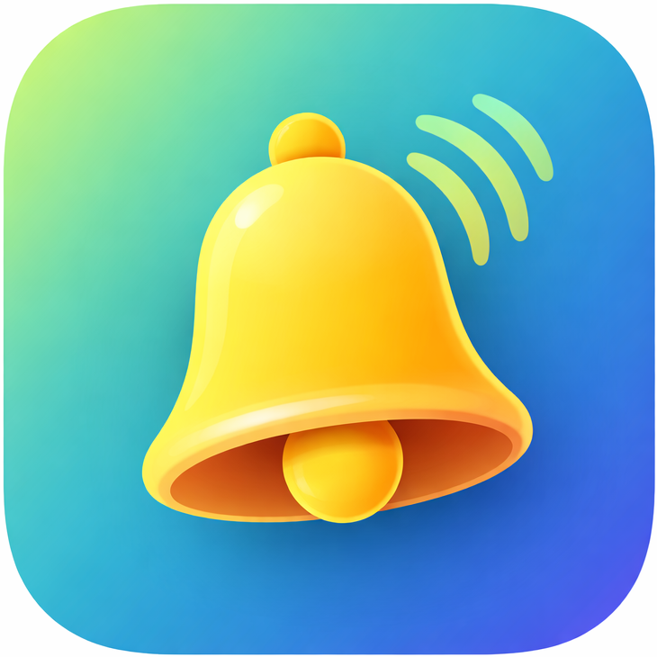
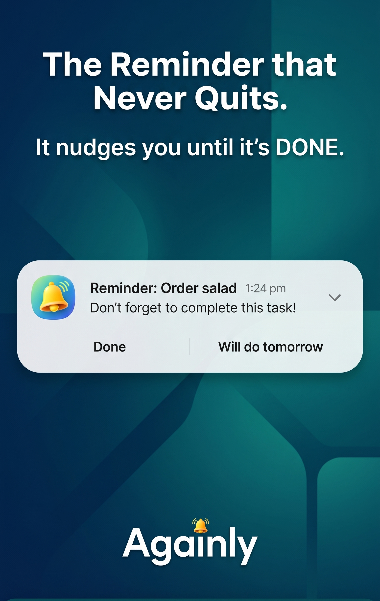
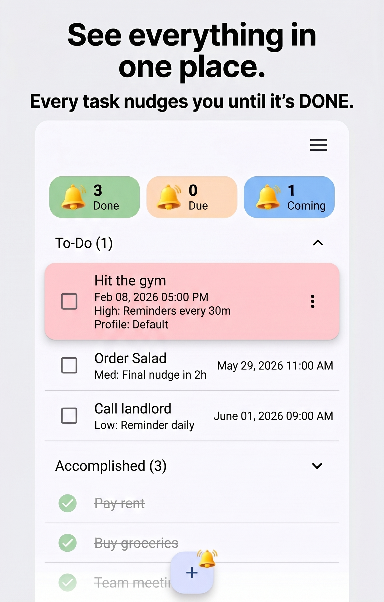
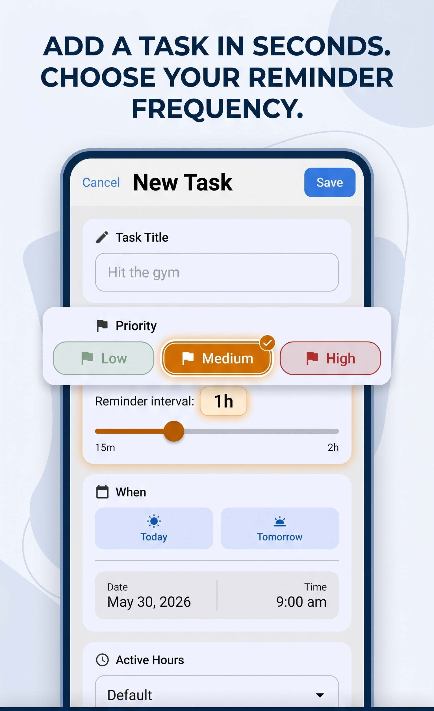
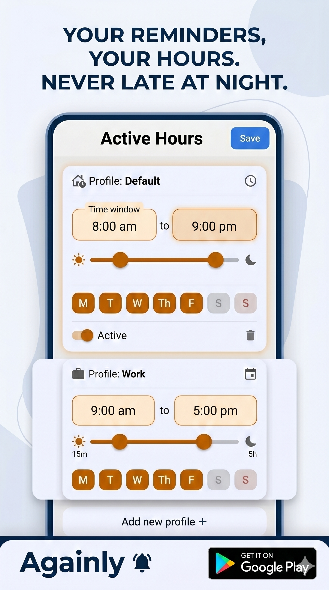

Againly is a recurring reminder app for Android. Set a task once and get gentle, repeating reminders — only during your hours — until you mark it done.
▶ Get it on Google Play Free · No ads · Private by designMost reminder apps ping you once and give up. Againly keeps reminding you until the task is finished.
Repeating nudges until you mark the task done — perfect for things you keep putting off.
Set your active hours and Againly only reminds you in that window. No late-night pings.
High, Medium, and Low priorities control how often each task reminds you.
Track tasks completed today, this week, and this month — without the mental load.
Pause everything during a meeting or day off, with automatic resume (Premium).
No ads, no tracking. Your reminders stay on your device.
From the first nudge to the last — here's how Againly keeps you on track.




A few things people ask about recurring reminder apps.
A recurring reminder app sends repeating reminders for a task instead of a single alert. Againly keeps gently nudging you until you mark the task done, so things you tend to forget don't slip through.
You set your active hours — for example 8 AM to 9 PM — and Againly only sends reminders within that window. No late-night or weekend pings unless you want them.
Yes. Againly is free to download and use, with an optional Premium upgrade that adds Global Snooze, custom active-hours profiles, and custom reminder intervals. No ads, and your data stays on your device.
Download Againly and let your tasks remind you until they're done.
▶ Get it on Google Play